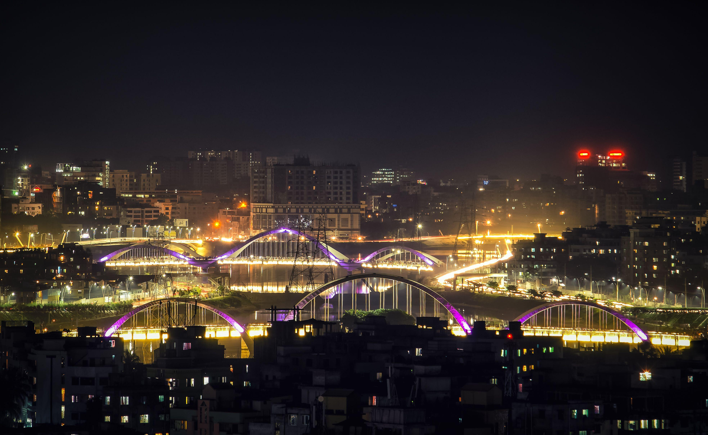
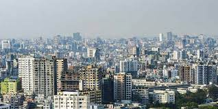

Dhaka, formerly known as Dacca, is the capital and largest city of Bangladesh, as well as the world's largest Bengali-speaking city. It is the eighth largest and sixth most densely populated city in the world with a population of 8.9 million residents as of 2011, and a population of over 21.7 million residents in the Greater Dhaka Area. According to a Demographia survey, Dhaka has the most densely populated built-up urban area in the world, and is popularly described as such in the news media. Dhaka is one of the major cities of South Asia and a major global Muslim-majority city. As part of the Bengal delta, the city is bounded by the Buriganga River, Turag River, Dhaleshwari River and Shitalakshya River. The area of Dhaka has been inhabited since the first millennium. An early modern city developed from the 17th century as a provincial capital and commercial centre of the Mughal Empire. Dhaka was the capital of a proto-industrialised Mughal Bengal for 75 years (1608–39 and 1660–1704). It was the hub of the muslin trade in Bengal and one of the most prosperous cities in the world. The Mughal city was named Jahangirnagar (City of Jahangir) in honour of the erstwhile ruling emperor Jahangir. It hosted the seat of the Mughal Subahdar, Naib Nazims, Dhaka Nawabs, and Dewans. The pre-colonial city's glory peaked in the 17th and 18th centuries when it was home to merchants from across Eurasia. The Port of Dhaka was a major trading post for both riverine and seaborne trade. The Mughals decorated the city with well-laid gardens, tombs, mosques, palaces and forts. The city was once called the Venice of the East. Under British rule, the city saw the introduction of electricity, railways, cinemas, Western-style universities and colleges and a modern water supply. It became an important administrative and educational centre in the British Raj, as the capital of Eastern Bengal and Assam province after 1905. In 1947, after the end of British rule, the city became the administrative capital of East Pakistan. It was declared the legislative capital of Pakistan in 1962. In 1971, after the Liberation War, it became the capital of independent Bangladesh. A beta-global city, Dhaka is the center of political, economic and culture life in Bangladesh. It is the seat of the Government of Bangladesh, many Bangladeshi companies and leading Bangladeshi educational, scientific, research and cultural organizations. Since its establishment as a modern capital city; the population, area and social and economic diversity of Dhaka have grown tremendously. The city is now one of the most densely industrialized regions in the country. The city accounts for 35% of Bangladesh's economy. The Dhaka Stock Exchange has over 750 listed companies. Dhaka hosts over 50 diplomatic missions as well as the headquarters of BIMSTEC and CIRDAP. The city's culture is known for its rickshaws, cuisine, art festivals and religious diversity. The old city is home to around 2000 buildings from the Mughal and British periods
Under the Köppen climate classification, Dhaka has a tropical savanna climate (Köppen Aw). The city has a distinct monsoonal season, with an annual average temperature of 26 °C (79 °F) and monthly means varying between 19 °C (66 °F) in January and 29 °C (84 °F) in May. Approximately 87% of the average annual rainfall of 2,123 millimetres (83.6 inches) occurs between May and October. According to the air quality index (AQI), the air of Dhaka is "unhealthy", and it posited third in the measurement of pollution. Increasing air and water pollution emanating from traffic congestion and industrial waste are serious problems affecting public health and the quality of life in the city. Water bodies and wetlands around Dhaka are facing destruction as these are being filled up to construct multi-storied buildings and other real estate developments. Coupled with pollution, such erosion of natural habitats threatens to destroy much of the regional biodiversity. Due to the unregulated manufacturing of brick and other causes, Dhaka is one of the most polluted world cities with very high levels of PM2.5 air pollution.
